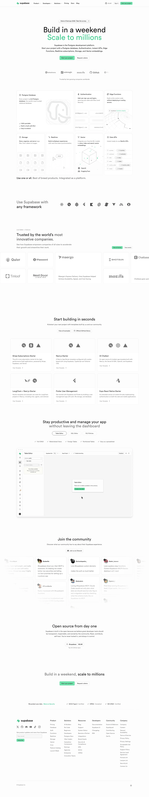

Supabase 主题
Supabase 的 Design.md 主题展示，围绕开发工具、媒体内容、暗色界面、SaaS 产品组织页面。
Open-source Firebase alternative. Dark emerald theme, code-first.
开发工具媒体内容暗色界面SaaS 产品浅色界面B2B 产品效率工具专业工具

来源
- 来源
- getdesign.md
- 镜像
- github:VoltAgent/awesome-design-md
- 网站
- https://supabase.com/
- 详情
- https://getdesign.md/supabase/design-md
色板
#3ecf8e: #3ecf8e#24b47e: #24b47e#171717: #171717#4ade80: #4ade80#212121: #212121#707070: #707070#9a9a9a: #9a9a9a#b2b2b2: #b2b2b2#ffffff: #ffffff#fafafa: #fafafa#1c1c1c: #1c1c1c#202020: #202020
字体
display: Circularbody: Helvetica Neuemono: ui-monospacehints: Circular,Helvetica Neue,ui-monospace,Menlo,Monaco,Consolas,Liberation Mono,Geist,Inter
圆角
control: 6pxcard: 12pxpreview: 12pxpill: 9999pxsource: design-md
间距
xxs: 2pxxs: 4pxsm: 8pxmd: 12pxlg: 16pxxl: 24pxxxl: 32pxhuge: 64pxsource: design-md
使用建议
建议
- 建议：Reserve {colors.primary} emerald for filled CTAs and the wordmark accent — it should appear sparingly。
- 建议：Render display tiers at weight 500 with negative letter-spacing — the engineered tightness is part of the brand。
- 建议：Use {rounded.sm} 6px for buttons — square-ish radii, never pill-shaped。
- 建议：Composite product UI mockups inside {rounded.lg} containers with subtle Level 2 shadows。
- 建议：Use near-black {colors.ink} on the emerald button (not white) — the green reads as "lit" with dark type, which is the brand's idiosyncratic choice。
避免
- 避免：introduce additional accent colors as system colors — purples, yellows, and pinks belong inside chart points and integration logos only。
- 避免：bump display weight above 500 — the brand's calibrated mid-weight breaks at 600+。
- 避免：use pill-shaped buttons; the brand's button radius is square-ish 6px。
- 避免：use white text on the emerald button — the brand specifically uses near-black on green。
- 避免：add atmospheric gradients to hero bands — the white canvas is the design。
查看 DESIGN.md